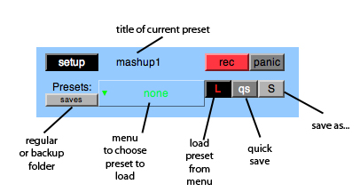

Presets, Saving and Loading

- When saving a new preset use 'save as...' S-button on the right, enter a name, press enter or 'ok'.
- When on a preset that has been saved once you can quicksave, overwriting the preset by the qs-button.
- To load a saved preset choose it in the menu and click the red and black L-button.
- Whenever a preset is overwritten a backup is created. To load backup presets click the 'saves' button so it changes to 'backups', then the menu displays backed up presets and you can load them as usual.